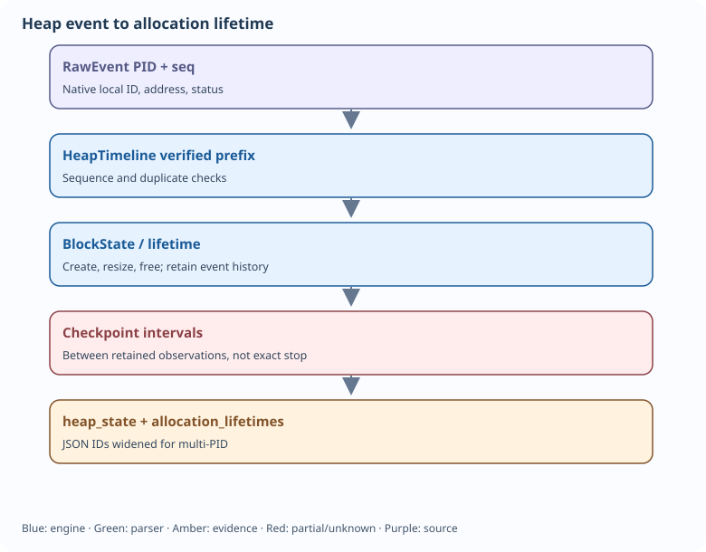
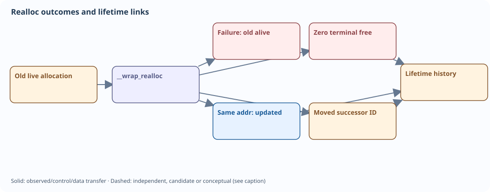

31 · Heap event reader and lifetime reconstruction #
Key terms #
| Term | Plain meaning |
|---|---|
| Event tailer | A reader that takes new, complete lines from the event file rather than rereading all of it as a new history. |
| Heap timeline | The accumulated view of which tracked block was created, resized, freed or still observed. |
>
The big picture #
The C wrapper produces PID-local allocation telemetry; Rust owns incremental input, checked sequence history, block lifetimes and final serialization. Read the C runtime for when a row is emitted and independent diagnostics for why a Valgrind error is not a primary-run allocation event. The GDB-followed inferior's snapshots and events from other processes have different observation scopes.
Source file: src/allocation_tracker.rs #
Parsing and incremental input #
parse_event_line(line: &str) -> Result<RawEvent> (src/allocation_tracker.rs:82-160) accepts exactly 10 whitespace-separated fields, or 12 only for calloc. It parses PID as u32, sequence/IDs/size/calloc operands as decimal u64, and addresses/caller as hexadecimal u64; unknown kind/status, malformed numbers, out-of-range PID and wrong field count yield EngineError::AllocationEventParse. RawEvent retains PID, sequence, kind/status, old and new IDs/addresses, caller PC and optional calloc operands (:44-80). A syntactically valid row is not by itself proof of a complete event stream.
EventFileReader::new(path: PathBuf) -> Self and EventFileReader::read_new(&mut self) -> Vec<RawEvent> (:262-275,293-400) track file offset, partial bytes, parse-error count and first 50 messages. Each call opens the event file, checks loss after prior observations (disappearance, smaller size, Unix device/inode replacement, seek/read failure), then reads at most 1 MiB plus a sentinel byte. Exceeding that per-stop cap keeps the bounded prefix but permanently quarantines subsequent input. Only newline-terminated lines parse; an unfinished tail up to 4096 bytes is buffered without rereading it from disk, and a larger line is rejected. incomplete_line(&self) -> bool reports a pending/oversized tail; transport_damaged(&self) -> bool reports definitive malformed/oversized/truncated input (:277-284). A short line can still be in flight at one stop; a trailing partial line at the final read means incomplete history. This reader is bounded, not a general-purpose recovery protocol for torn writes.
Ordered timeline and ownership #
HeapTimeline::new(limits_max_blocks: usize) -> Self sets a block cap and an event-retention cap of four times that value (:431-486). HeapTimeline::ingest(&mut self, ev: &RawEvent) (:521-756) uses (pid,id) and (pid,address) for live lookup. Per-PID sequences must begin at 1 and increase by one. Duplicates or out-of-order rows are counted but not ingested as state transitions; a gap is counted/recorded (up to 50 gap details) and marks that PID incomplete (:523-566). Malformed transport quarantines all PIDs, including future first-seen PIDs; after a PID gap it still retains subsequent raw-derived event records but no longer infers block changes for that PID. history_complete(&self) -> bool and is_pid_complete(&self, pid: u32) -> bool also reflect transport/retention limits (:501-519).
On a reliable prefix, successful malloc/calloc calls add_block(&mut self, ev: &RawEvent, alloc_type: &'static str, realloc_from: Option<u64>), which rejects zero IDs/addresses, repeated IDs, overlapping live base addresses or exhausted block retention (:583-604,768-808). Overflow calloc is an AllocationFailed event with unknown byte size, preserving both operands; failed allocation creates no block. retire_block(&mut self, idx: usize, seq: u64) marks the block freed, stores its free sequence and subtracts live bytes (:758-766). push_event(&mut self, event_type: HeapEventType, ev: &RawEvent, detail: Option<String>) records the per-PID usage, raw caller and completeness qualification until the event cap (:810-855). Per-PID usage is an observed ledger, not total OS heap consumption.
realloc behavior is branch-specific (:606-699). new from NULL starts a block. An untracked predecessor that returns the same address is also new: if Rust has a live block for that PID/address (for example, C table overflow), it retires/links the observed predecessor; otherwise it starts at the first observed block. ok_same retires the old block and creates a linked new lifetime under the current wrapper's fresh ID; historical input using the old ID simply resizes its existing lifetime. ok_moved retires the address/ID-matched old block and links the new block with realloc_from_id. zero records the glibc realloc(ptr,0) free as a terminal Reallocated event with the old ID when found, not a new lifetime; failed records failure and preserves the old live block. The same numeric address can later have multiple historical block candidates: address_candidates(&self, pid: u32, addr: u64) -> Vec<&BlockState> deliberately returns all observed containing extents, not pointer-origin proof (:882-895).
For free (:700-746), ok retires the matching live block or marks the PID incomplete if none exists; null is an observed no-op. unknown may resolve by live (pid,address) despite a full C table. If it matches only a previously freed address, the detail says possible double free because unobserved reuse remains possible; otherwise it is an untracked address. alive_blocks(&self, pid: u32) -> Vec<&BlockState> returns no asserted live blocks when that PID is incomplete (:861-873). Caps and gaps preserve observed prefixes, not guaranteed final ownership.
Transport and coverage #
verify_event_status(path: &Path, timeline: &HeapTimeline, inferior_pid: Option<u32>) -> Vec<String> (:178-260) independently reads at most 1 MiB of status data. It requires a final newline and strict decimal pid seq failures lines, no PID zero or duplicate ACK; each observed event PID and the followed inferior (including one with zero events) must have one ACK with its last observed sequence and zero failures. It reports unexpected ACKs, mismatches and missing ACKs (up to 50 messages). It cannot discover a descendant with no events or ACK. An ACK cannot mend a malformed event stream; failure after the last logged row is detectable only because sequence/failure ACK checking is separate. At src/trace.rs:478-483, status errors quarantine the timeline, while retained events survive.
pids_seen(&self), needs_pid_widening(&self) and global_id(&self, pid: u32, local_id: u64) -> u64 (:897-921) leave IDs local for one observed PID; for multiple observed PIDs, nonzero IDs serialize as (pid << 32) | local_id, while zero stays zero. ingest flags any local ID above u32::MAX in a multi-PID history as id_widening_overflow, so completeness is false rather than claiming unique serialized identity (:548-552). Event sequence numbers remain local to the process; interleaved file order is not a universal heap clock.
Caller location and final state #
resolve_caller_locations(binary: &Path, callers: &[u64]) -> Result<HashMap<u64, CallerInfo>> batches distinct PCs (512 per addr2line -f -C -e invocation) with supervised output/deadline; unknown ?? or zero line leaves the caller unresolved (:936-985). apply_caller_locations(timeline: &mut HeapTimeline, resolved: &HashMap<u64, CallerInfo>) annotates blocks/events without replacing their raw return PCs (:1004-1031). Its caller trace_program_inner subtracts executable load bias and one byte from the recorded return address before resolution, then maps the resolved location back to the raw PC (src/trace.rs:590-636). A resolved file/line identifies an attributed call site, not which expression on a multi-call source line executed.
Orchestration in src/trace.rs #
run_gdb_phase(...) -> Result<GdbPhaseResult> receives the reader/timeline and paths (src/trace.rs:1113-1124). At each observed stop it calls read_new, quarantines damaged transport, ingests rows and records their count before capturing source state (:1371-1405). It performs one final read after termination for destructor/exit-handler events (:1977-1991). trace_program_inner checks terminal ACKs, distinguishes tracker timeout/cancellation/failure from completed collection (:478-483,517-588), and builds JSON events and heap state (:851-943). final_events(timeline: &HeapTimeline) -> Vec<HeapEvent> widens IDs as needed (:2600-2614); backfill_snapshots(...) attaches resolved locations and adjusted IDs without rewriting historical pointer observations (:2564-2597); build_heap_state(...) carries forward only bytes actually read at earlier snapshots, including historical bytes of freed blocks (:2658-2694). Event-to-checkpoint correlation reports bracketing intervals, not an exact stop or source expression (:2616-2656).
heap_history.complete requires timeline completeness, no parser errors/partial line, and a terminal debugger outcome (:891-933); status errors already quarantine the timeline. Its process_scope="verified_observed_pids_only", observed_event_pids, followed_inferior_pid and unobserved_process_coverage="unknown" qualify that claim. An observed child missing an ACK makes it incomplete; a silent child cannot be inferred. Partial events remain available, with heap usage and lifetime status downgraded (:860-870,979-1006). Neither heap telemetry nor checkpoint bytes prove pointer origin or active union member.
Tests and interpretation #
The module's tests exercise parsing, calloc overflow and zero sizes, success/failure/zero realloc, address reuse, table-overflow fallback, PID widening, sequence gaps, transport corruption and caps (src/allocation_tracker.rs:1053-1788); seeded_reuse_sequences_match_independent_live_byte_accounting checks deterministic live-byte transitions (:1133-1218). Real wrapped C transport tests live in tests/heap_instrumentation.rs:152-334; tests/heap_provenance.rs:48-90,131-185 checks ACK and observed/silent forks. The release closure confirms scoped completeness, not a census of all processes. The older V2 contract describes the recording background; where its in-place realloc wording differs, the current wrapper and timeline branches above govern.
Diagram notes #
Event to lifetime #


Sequence checks precede block transitions; final lifetimes are reconstructed from retained events, not address equality.
Realloc branches #


Failure, same-address success, moved success and terminal zero-size free produce different lifetime transitions.